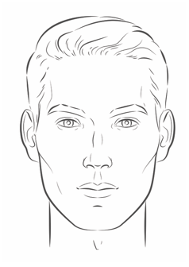
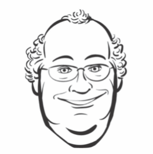
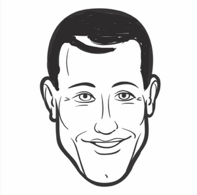

Art is President and CEO of Quercus Therapeutics since 2021.
He has been in healthcare and biotechnology for over twenty years, as a clinical pharmacist,
researcher, and company leader. Before joining Quercus, Art was in an undisclosed location for several years.

Thomas van Haft, DVM, PhD
Thomas is Chief Scientific Officer at Quercus since 2019.
Before that he was a postdoctoral researcher and then Assistant Professor in the
lab of one of our founders, Professor Jonathan Jenkinson, at Harvard University. Thomas trained
as a veterinarian in the Netherlands, earning his DVM from the University of Utrecht and a PhD in
bioengineering and molecular biology from Radboud University in Nijmegen.

Scott White, JD, MS
Scott has been Chief Financial Officer and Head of Legal and Intellectual Property at Quercus since 2019.
Prior to joining Quercus Scott held positions of increasing responsibility at several major pharmaceutical and biotechnology companies.
Anita Mercer, MSW
Anita is our Chief People Officer and head of our People & Organization line function, formerly known as Human Resources.
Before joining Quercus, Anita was VP, Human Resources, at Anonym Pharma.

Jorge Perez, PhD
Jorge is Sr. Vice President, Research & Development at Quercus. He oversees our preclinical research, toxicology and preclinical safety,
pharmacokinetics, and clinical development organizations. Before coming to Quercus in 2020,
Jorge was a postdoctoral researcher in the lab of our other founder, Prof. Harvey Hammerman, at Harvard.
Jorge earned his PhD in molecular biology at the University of Buenos Aires, Argentina.
Antoine (Tony) Dupree, PhD
Tony is head of Drug Manufacturing at Quercus. Tony joined Quercus in 2023 after advancing to roles of
increasing responsibility at Biogen-Idec and before that at Millennium Therapeutics. Tony has a PhD in biochemical engineering from Boston University.
Benjamin (Benny) Mason, MD, PhD
Benny recently joined Quercus as head of Clinical and Translational Development from Pfizer.
Benny is a neurologist and physician scientist who trained at Princeton, University of Pennsylvania, and Harvard.